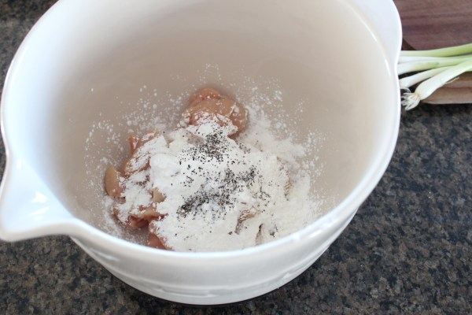

Ingredients

- 3 tbsp canola oil (divided)
- ¼ cup Gluten-Free Soy Sauce
- 2 tbsp rice vinegar
- 1 tbsp sriracha
- 2 tbsp honey
- 1 tbsp fresh garlic (crushed)
- 2 tsp fresh ginger (grated)
- ½ tsp chinese five spice
- 1 tsp crushed red pepper flakes
- 1 lb boneless skinless chicken breasts (sliced into large chunks)
- ½ cup cornstarch
- ½ tsp salt
- ½ tsp black pepper
- 8 small dried red chilies
- ¼ cup scallions (sliced)
Instructions

Step 1:
In a medium bowl, whisk 1 tbsp canola oil with the soy sauce, rice vinegar, sriracha, honey, garlic, ginger, chinese five spice and red pepper flakes. Set aside.

Step 2:
Toss the chicken breasts in the cornstarch, salt and pepper. Add the remaining 2 tbsp canola oil to a large skillet over medium-high heat.

Step 3:
When the oil is hot, add the chicken and cook 4-5 minutes. Add the chilies, then pour the sauce over the chicken and cook 2-3 minutes.


Step 4:
Add the scallions, cook an additional minute, remove from the stove and serve over rice.